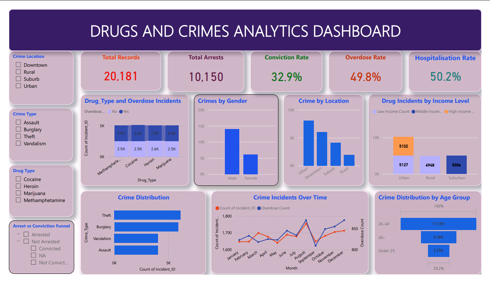

Using Data Analytics to Understand Crime Patterns and Support Better Decision-Making

Zimbabwe faces growing challenges related to crime, substance abuse and public safety. Understanding the relationship between socio-economic conditions, drug use and criminal activity is essential for developing effective intervention strategies.
This project used crime and public safety datasets to identify patterns, trends and risk factors that influence criminal activity and drug-related incidents.
Data analytics provides valuable insights into crime trends and drug abuse patterns. By combining data-driven approaches with community interventions, policymakers can make informed decisions that improve public safety and strengthen social resilience.
© 2026 Tendai Davies Makoni. All Rights Reserved.